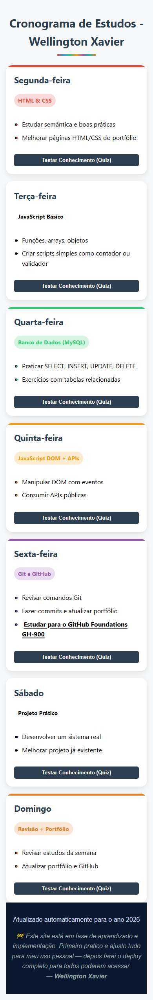
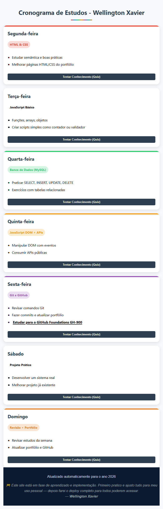
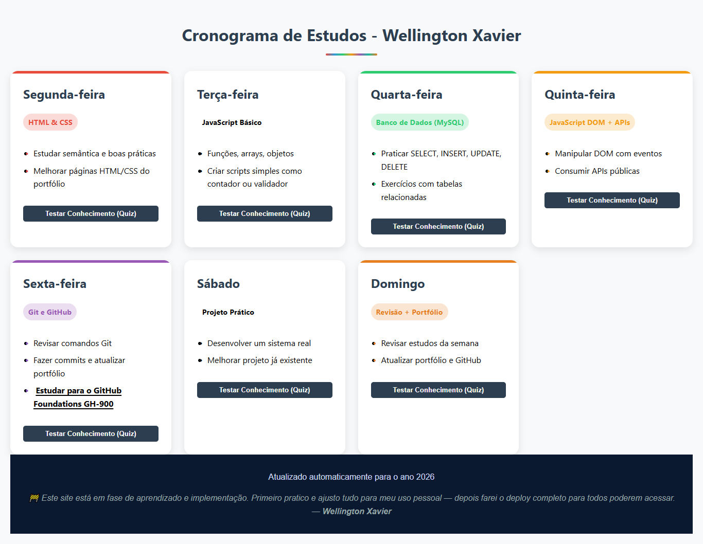
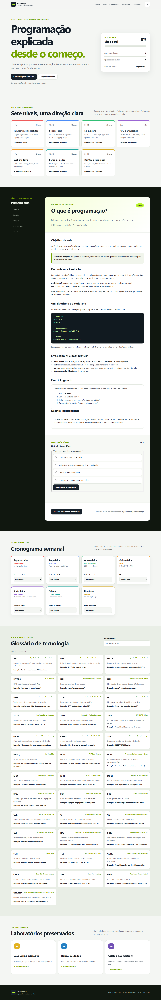

V1.0.0 · referência original
Cronograma semanal
Sete cartões organizavam disciplinas e tarefas por dia, com quizzes, cores temáticas e ligação ao simulado GitHub Foundations.



Registro histórico · 2025–2026
Do cronograma semanal a uma base educacional progressiva, preservando funcionalidades e evidências verificáveis.
V1.0.0 · referência original
Sete cartões organizavam disciplinas e tarefas por dia, com quizzes, cores temáticas e ligação ao simulado GitHub Foundations.



V2.0.0 · primeira base Academy
A nova entrada introduz trilhas, aula completa, quiz, glossário, progresso local, tema escuro e navegação responsiva, mantendo os laboratórios anteriores.

Antes e depois
| Área | V1.0.0 | V2.0.0 |
|---|---|---|
| Objetivo | Planejamento semanal | Aprendizagem progressiva |
| Conteúdo | Tarefas e quizzes | Trilhas, aula, prática, quiz e glossário |
| Estado | Não persistido | Progresso no navegador |
| Interface | Cartões responsivos | Navegação, temas e componentes acessíveis |
| Qualidade | Sem automação | Testes Node, Playwright e CI |
Melhorias verificadas
Histórico selecionado
028d6828 — ideia da branch cronograma.08de8cb5 — organização inicial em MVC.98bf08c9 — expansão do conteúdo GitHub.9b16cd8d — responsividade mobile.f1eb9e0d — estado de referência V1.7863defb — primeira base WX Academy V2.